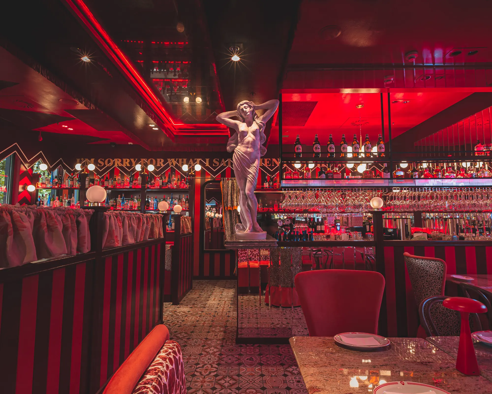
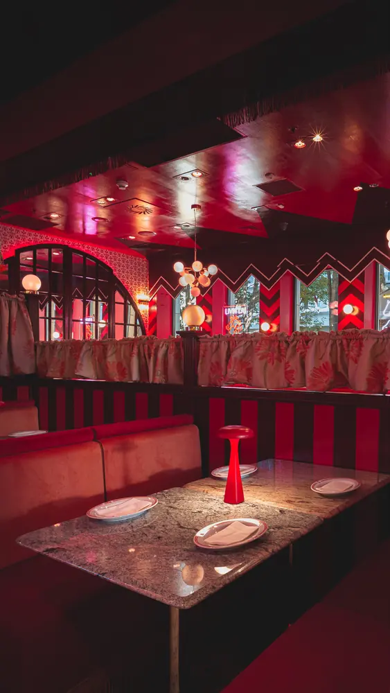
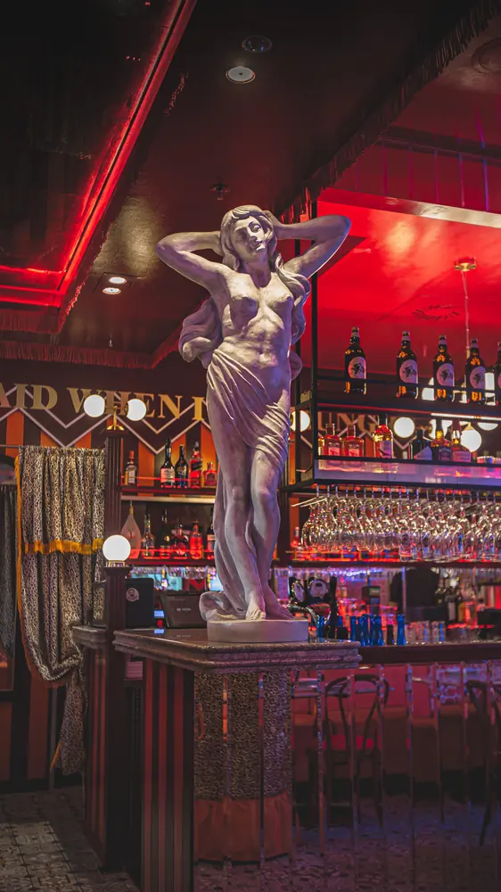
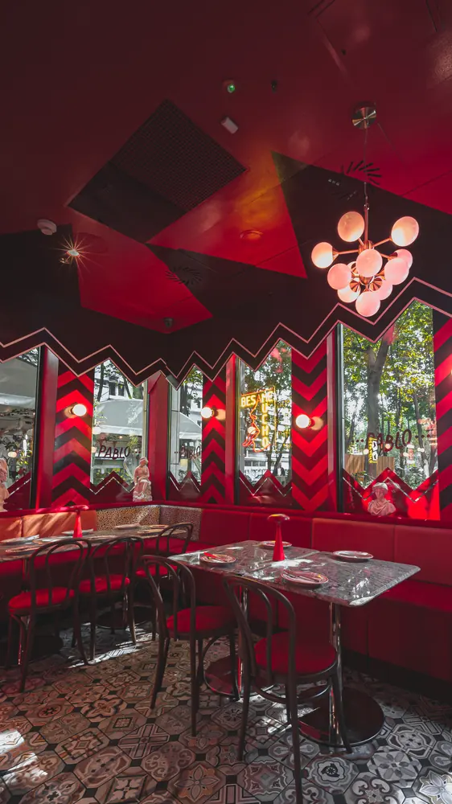
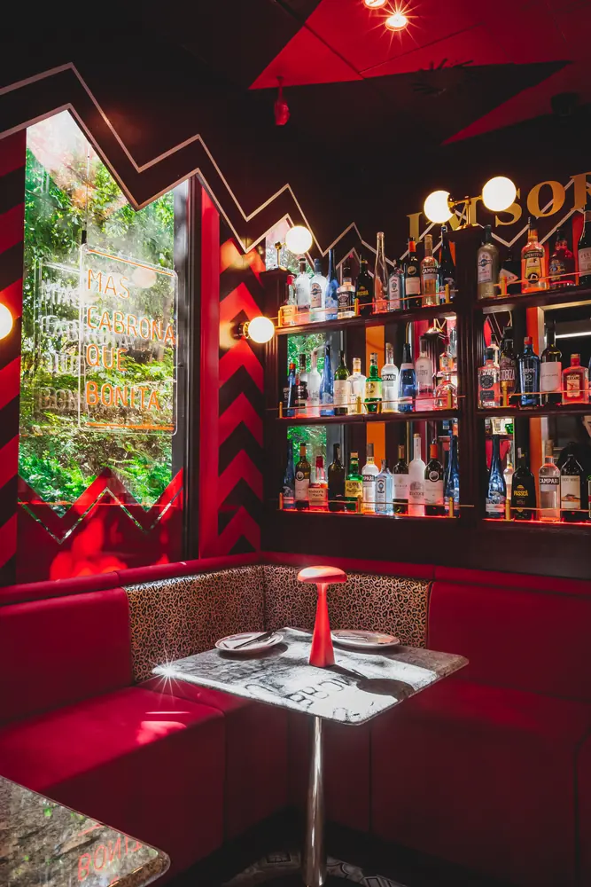
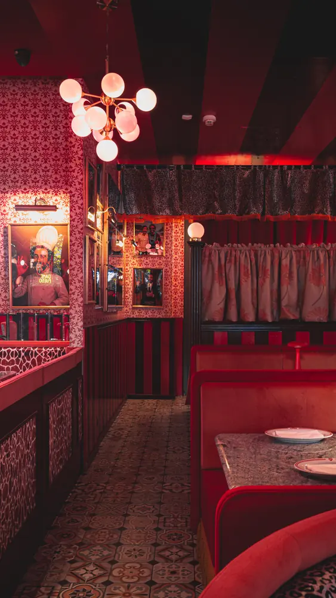
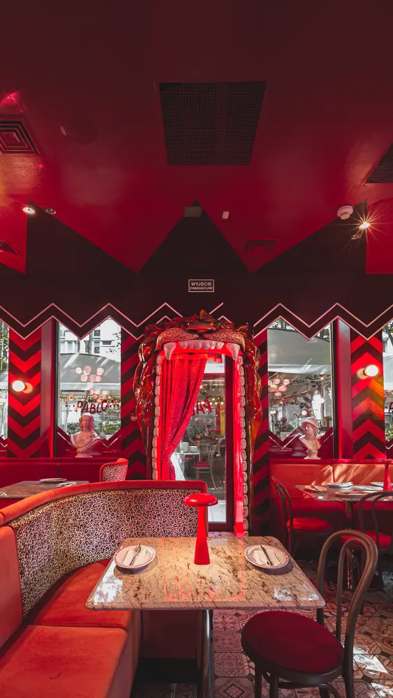
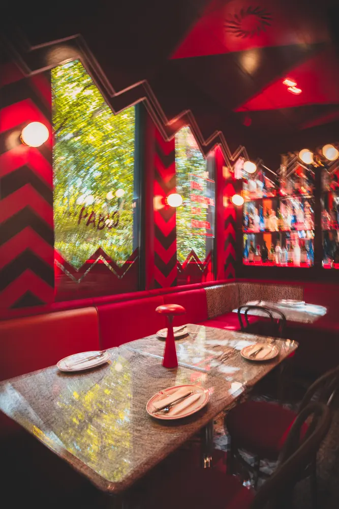

Wieczór po madrycku
Kolacja o 21:00 to u nas pora jak najbardziej normalna.


Hiszpańska fiesta w centrum Warszawy · Grzybowska 5A
Ponad 30 tapas, paella na wspólnym stole, sangria i hiszpańskie wino. Wszystko w czerwonym, filmowym wnętrzu, w którym wieczór zawsze trwa dłużej, niż planowałeś.
01 · Historia

Pablo Martín Delgado · MadrytPablo przyjechał z Madrytu z zeszytem przepisów babci i jedną myślą: przenieść do Warszawy smaki dzieciństwa, zapach hiszpańskich ulic i tę atmosferę, w której tapas to nie jedzenie, tylko styl życia.
Najpierw było TAPAS Gastrobar w Hiltonie przy Grzybowskiej 63. Od 2020 roku gościmy pod numerem 5A, w miejscu dawnej Casa Pablo, którą Pablo prowadził z żoną Grace. Babcia Alicia wciąż jest z nami - w każdym kawałku baskijskiego sernika.
„Przyjdź na tapas, zostań dla atmosfery. ¡Olé!”- Pablo
02 · Wnętrze
Przewiń, żeby przejść się po sali →





Zobacz
na żywo
04 · Happy Hours
Codziennie od 16:00 do 18:00, w sobotę od 12:00 do 15:00. Tylko na miejscu, przy stoliku u Pabla.
05 · Klimat
Kolacja o 21:00 to u nas pora jak najbardziej normalna.
Wieczory z muzyką na żywo. Śledź nasz Instagram i Facebook, żeby nie przegapić kolejnego koncertu.
Gdy tylko wychodzi słońce, wynosimy stoliki na zewnątrz.
Przyjdź z czworonogiem. Twój pies też zasługuje na wieczór w Hiszpanii.
Transmisje sportowe na dużym ekranie. Z tapas i piwem kibicuje się lepiej.
Otwieramy w południe, codziennie.
Rondo ONZ tuż obok, parking przy budynku. Wejście po lewej stronie - trochę ukryte, jak każdy dobry sekret.
06 · Opinie
„Super klimat, bardzo sprawna i miła obsługa, a co najważniejsze - przepysznie!”
Gość · zjedz.my
„Takiego kotleta jeszcze nie jedliście! Cachopo - bardzo chrupiąca, panierowana w panko wołowina, nadziewana szynką serrano i serem.”
@leccoszjesc · TikTok
„Pyszne jedzenie, wspaniała miła obsługa, piękny wystrój klimatyczny.”
Gość · zjedz.my
„Gorąco polecam, pyszne jedzonko, świetny klimat.”
Gość · zjedz.my
„Super klimat, bardzo sprawna i miła obsługa, a co najważniejsze - przepysznie!”
Gość · zjedz.my
„Takiego kotleta jeszcze nie jedliście! Cachopo - bardzo chrupiąca, panierowana w panko wołowina, nadziewana szynką serrano i serem.”
@leccoszjesc · TikTok
„Pyszne jedzenie, wspaniała miła obsługa, piękny wystrój klimatyczny.”
Gość · zjedz.my
„Gorąco polecam, pyszne jedzonko, świetny klimat.”
Gość · zjedz.my
„Pyszne jedzenie, napoje, wspaniała obsługa.”
Gość · zjedz.my
Goście z Tripadvisora piszą o „najlepszym hiszpańskim miejscu w Warszawie” i polecają Kalimotxo oraz tinto de verano.
Tripadvisor · w skrócie
„Pyszne jedzenie, miła obsługa. Polecam.”
Gość · zjedz.my
Cachopo jest „ogromne - najlepiej wziąć do podziału”. Smak? Niesamowity.
Tripadvisor · w skrócie
„Pyszne jedzenie, napoje, wspaniała obsługa.”
Gość · zjedz.my
Goście z Tripadvisora piszą o „najlepszym hiszpańskim miejscu w Warszawie” i polecają Kalimotxo oraz tinto de verano.
Tripadvisor · w skrócie
„Pyszne jedzenie, miła obsługa. Polecam.”
Gość · zjedz.my
Cachopo jest „ogromne - najlepiej wziąć do podziału”. Smak? Niesamowity.
Tripadvisor · w skrócie
07 · Instagram
08 · Imprezy i catering
Świętuj u Pabla! Zrelaksuj się, a my zajmiemy się organizacją - pyszne tapas, wino i niezapomniany klimat gwarantowane.
Zorganizuj hiszpańską fiestę, gdzie tylko chcesz. Nasze tapas to idealne finger food.
Wynajmij lokal na wyłączność dla swojej firmy. Przyjęcia do 200 osób - na siedząco lub w formie bufetu.
09 · Odwiedź nas